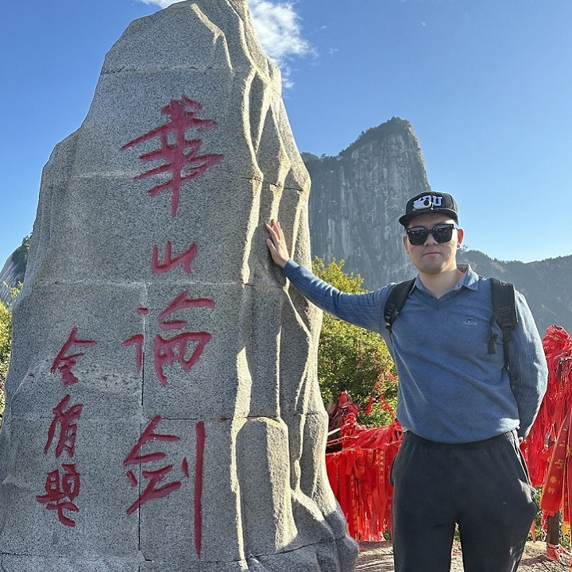
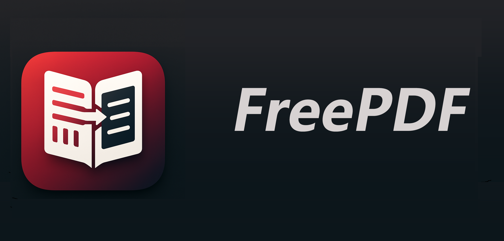
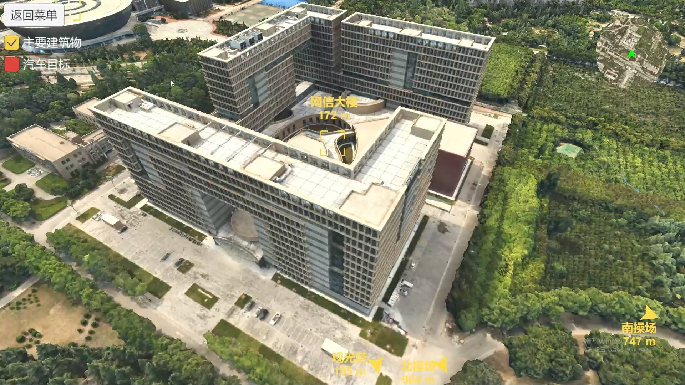
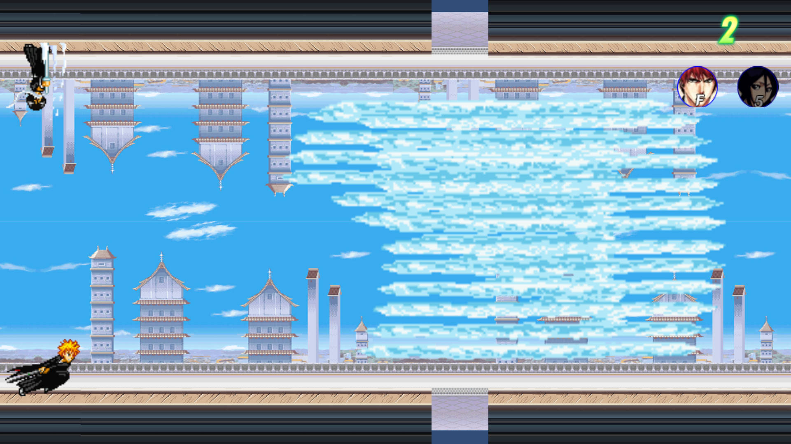
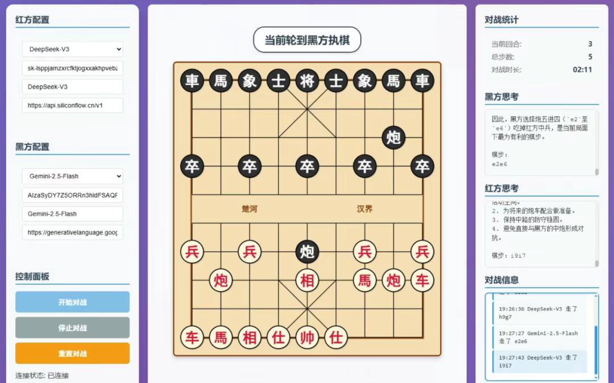
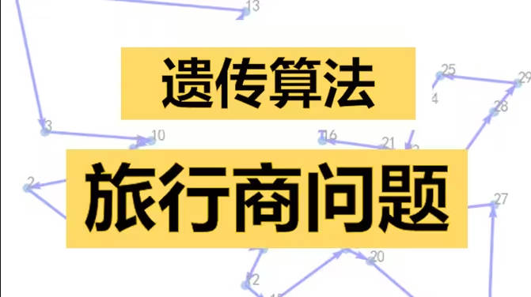

|
zstar 西安电子科技大学硕士生，计算机科学与技术专业。 主要研究方向为计算机视觉、目标检测、主动学习、域自适应。 CSDN博客专家，腾讯云创作之星，Bohrium特邀讲师，PyCon China 2025 演讲嘉宾，J SUPERCOMPUT、MACH VISION APPL、Discover Applied Sciences等SCI期刊审稿人 一个务实的理想主义者，热爱不息，保持好奇，终身学习。 联系邮箱：zstar1003@163.com | 联系微信：zstar1003 |
 |
{kind=link}
科研/奖项
|
开发项目 |
|
Ragflow-Plus
一个基于 Ragflow 的二次开发的 RAG 应用框架，致力于本地知识库的构建和大模型的交互优化，推动行业通解向领域特解迈进，Github仓库star量1k+，Docker镜像下载量5w+，在多家互联网初创团队和政企单位中部署应用。 |
|
|
FreeTex
一个专注公式识别的软件，可通过截图将公式识别成可编辑的Latex语言，支持导出Latex和MathML格式，支持本地部署和联网多模态模型识别两种识别方式。 |
|
|  |
FreePDF
一个PDF文献阅读器，支持将英文PDF文献按相同结构翻译成中文，并能通过设定的Ai模型实现对文章内容的问答，提升科研工作者的文献阅读效率。 |

|
FreeEditor
一款简洁的双栏 Markdown 编辑器，支持实时预览和微信公众号样式导出。 |
|
FreeGIF
一个GIF录制、编辑、压缩三合一的软件。 |
|

|
缺陷检测AI集成处理软件
一个用于事件相机(DVS)采集芯片图像的缺陷检测软件，包括项目管理/图像标注/模型训练/模型推理/结果可视化等分类、检测、分割任务的全流程。
商业项目，未开源，软件已应用于广州各缺陷检测工厂一线。
|
|  |
校园智能导览系统
一个用于校园智能导览的系统，包含无人机三维场景扫描，三维模型分块重建，模型格式转换，场景搭建渲染全流程，支持第三人称/第一人称全场景漫游。 |

|
交互式目标检测软件
一个基于人机交互的目标检测软件，支持将各检测算法结果进行可视化，同时能用模型预推理的方式，借助历史模型，生成预标注数据，提升数据标注的效率。 |
|  |
自制游戏：逆转尸魂界
一款独立制作的基于Unity引擎的2D横版跑酷游戏，玩家需同时操控两个角色，两个角色身处完全颠倒的平行世界，需要通过技能配合，应对不断出现的障碍物挑战。 |
|
自制游戏：3D六子棋
一个 3D 六子棋游戏，支持本地双人、人机对战和在线联机对战。 |
|
|  |
基于大语言模型的中国象棋AI对战平台
受到Kaggle举办的AI国际象棋对战赛的启发，构建了一个中国象棋AI对战平台，实现不同语言模型进行象棋对弈。 |
|
羲和：一个诗词类摆件APP
一个使用Flutter开发的APP，支持Android和iOS多端部署，每间隔一小时自动从网络获取诗词并显示，让旧手机成为一件优雅的摆件。 |
录制教程 |
|
通俗易懂的Latex教程
本人制作的一套针对数学建模的Latex快速上手教程，颠覆传统学习路线，在业内广受好评，B站累计播放量7万+。 |
|
|
数学建模绘图系列教程
本人制作的一套针对数学建模的绘图相关教程，为Latex教程的有效补充，广受校友推荐，B站累计播放量3万+。 |
|
|
方正飞腾及电子报纸排版部署系列教程
本人制作的一套针对方正飞腾排版和电子报纸排版部署的教程，在学生报社面临数字化转型时制作，广受新闻传媒专业类学生推荐，B站累计播放量10万+。 |
|
|  |
遗传算法求解TSP问题的方法讲解
本人制作的一个关于遗传算法求解TSP问题的方法讲解，B站累计播放量1万+。 |
|
感谢Jon Barron开源的模板! |